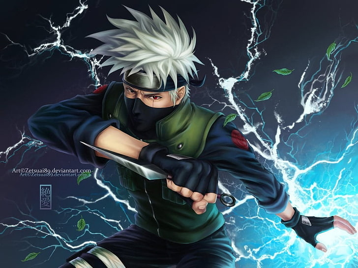
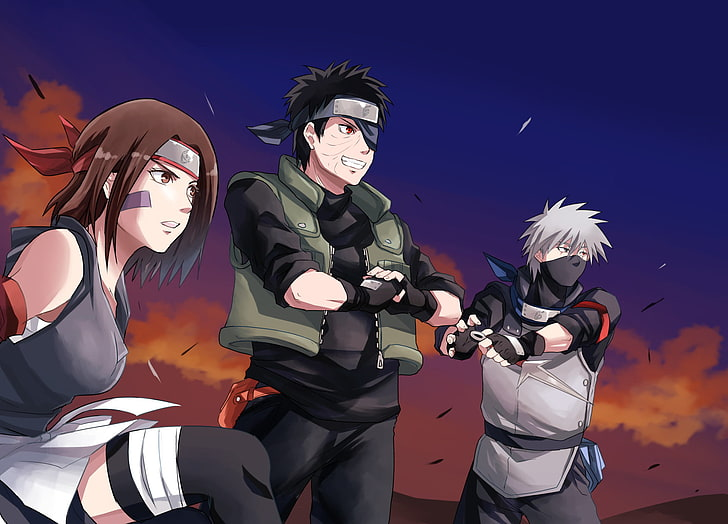
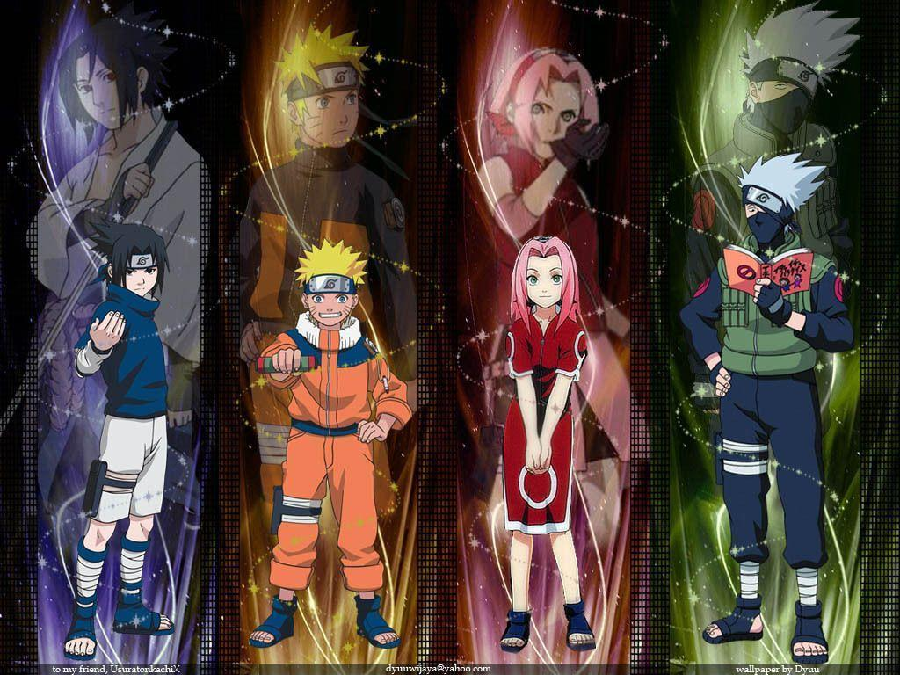

Kakashi Hatake! Kakashi is the son of Sakumo Hatake who was one of the most powerful shinobi's Konoha ever produced and was renowned throughout the ninja world as "White Fang of the Leaf".Kakashi was himself a child prodigy and during the ninja academy years he was hailed as the best of his generation.
When he was a baby, his mother died, and when he grew a little older, his dad commuted suicide, because his dad had to save his comrades by disobeying the rules, which infuriated everyone, and then he committed suicide. Kakashi was in a 3 man cell, with Obito Uchiha and Rin Nohara.
Uchiha Itachi! Itachi Uchiha was a ninja of Konohagakure's Uchiha clan that served as an Anbu Captain. He later became an international criminal after murdering his entire clan, sparing only his younger brother, Sasuke.

Team Minato! Team Minato was a team led by Minato Namikaze and composed of Kakashi Hatake, Obito Uchiha, and Rin Nohara.
During the Third Shinobi World War, Team Minato was assigned to destroy the Kannabi Bridge in Kusagakure in order to cut off Iwagakure's supply line in its war with Konoha. Kakashi, recently promoted to jōnin, was given leadership of the mission while Minato assisted the war effort elsewhere. Rin was captured by Iwa-nin during the course of the mission and Kakashi and Obito successfully rescued her. However, their escape was impeded by a cave-in and Obito's body was crushed by the falling boulders, rendering him unable to move. With other Iwa forces approaching, Obito gave his left Sharingan to Kakashi as a gift and then bade him to escape with Rin. They did so and Minato arrived in time to help fight off the Iwa-nin, but it was too late for them to save Obito. Minato helped them destroy the bridge before they returned to Konoha to mourn his loss.

Team 7! Team 7 was a Konohagakure team formed under the leadership of Kakashi Hatake. Two-and-a-half years after Sasuke Uchiha left the village, Kakashi filled out paperwork to form Team Kakashi, with his former pupils Naruto Uzumaki and Sakura Haruno now being treated as equals alongside their teacher. Following Yamato and Sai joining the team, the group went by Team Yamato during the former's leadership.
{kind=link}